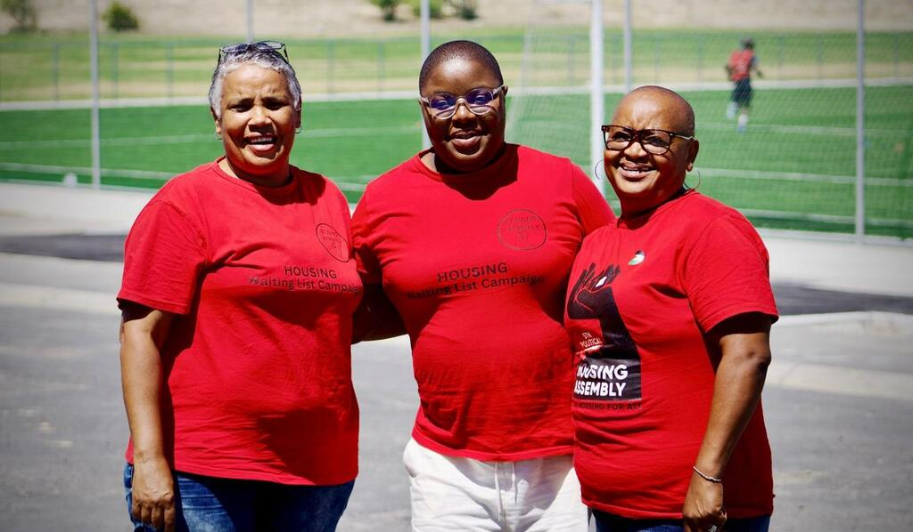
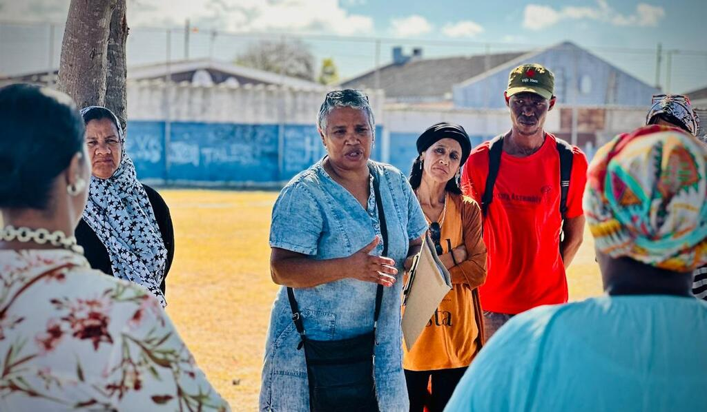
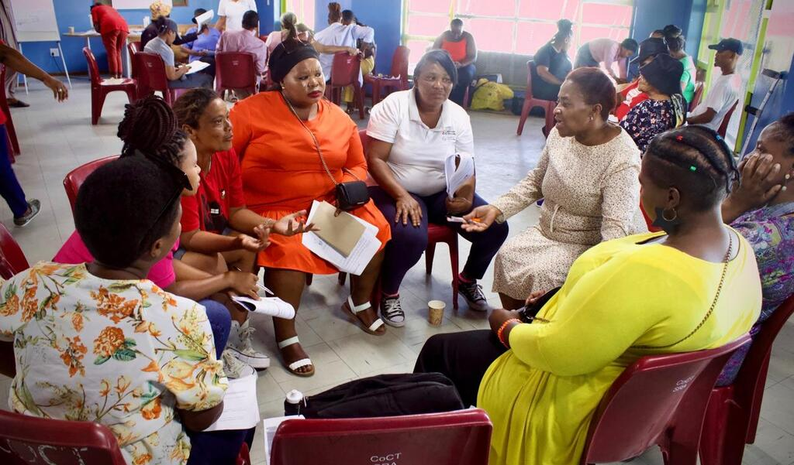

Decent Housing For All
The Housing Assembly is a social movement representing over 20 communities in the Western Cape, South Africa. Since 2009 we have fought for housing justice and dignity for all.
Who We Are
We work alongside residents living in informal settlements, backyards, temporary relocation areas, rental stock, and poorly built RDP housing to demand real solutions to housing inequality. Our movement also mobilises around broader human rights issues, including access to water and basic services, recognising that housing is more than just a structure — it is the foundation of a dignified life.
Our Communities


